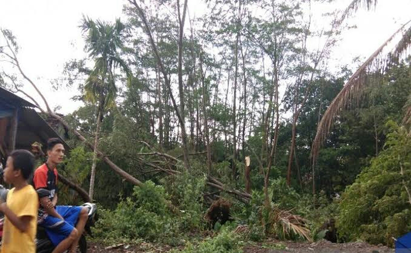
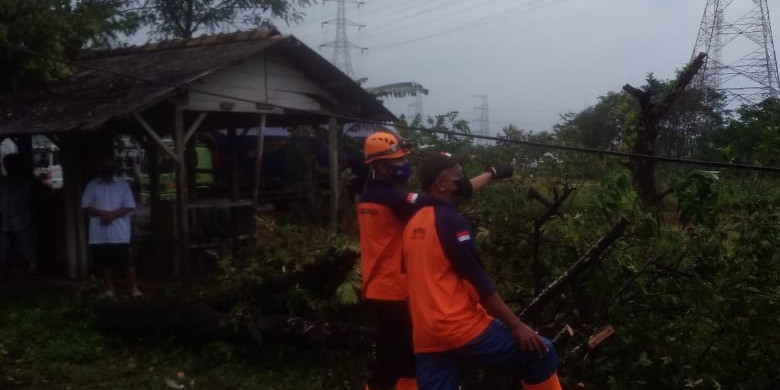

Angin kencang mengakibatkan sejumlah rumah warga di kabupaten batang,provinsi jawa tengah,rusak.BPBD setempat mencatat 31 rumah rusak dengan kategori rusak ringan hingga berat.tidak ada warga luka karena peristiwa yang terjadi pada minggu sore (23/1),pukul 15.45 WIB.
Angin kencang yang berlangsung dengan hujan lebat ini dirasakan masyarakat pada empat desa di kecamatan tulis,Batang.Didesa sembojo, kaliboyo,beji dan simbang.
Penanganan darurat juga menyasar pada pembersihan pohon tumbang. Sejumlah pohon roboh di beberapa titik,Petugas BPBD telah membersihkan ranting-ranting maupun pohon yang tumbang akibat angin kencang sore itu.
BNPB mengimbau pemerintah daerah dan warga untuk tetap waspda dan siap siaga dalam mengantisipasi fenomena angin kencang. Hal tersebut bertujuan untuk menghindari atau mencegah tumbangnya pohon saat hujan lebat turun atau angin kencang berlangsung.
Sementara itu, Kecamatan Tulis juga memiliki potensi bahaya banjir dengan kategori sedang hingga tinggi. Warga diharapkan tetap waspada terhadap potensi bahaya tersebut,
 